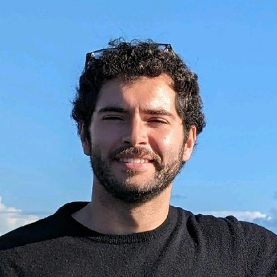

Lorenzo Caprari
Embedded Software Engineer · Reggio Emilia, Italy
Modern C++ for vehicles
About
I've spent about five years writing software that runs on vehicles. At Jaguar Land Rover in Ireland I worked on wired and over-the-air update management for next-generation ECUs. At VisLab (Ambarella) I built the vehicle control application of an autonomous driving stack and modernised its build system. I'm now at E80 Group, developing the onboard software of automated guided vehicles, where ROS 2 nodes meet TwinCAT PLC control.
Most of my work is modern C++ on Linux and QNX, close to the hardware and under real-time constraints. The part I enjoy most is what makes that code trustworthy: build systems, cross-compilation, static analysis, testing and CI. I attend C++ community meetups and events, such as C++ Day by the Italian C++ Community, and go to talks and workshops whenever I can.
Outside work I build nesso, an open-source log search tool, and write about performance and engineering practice. Away from the keyboard I'm usually running, hiking, cycling or out with my dog, and I go to the cinema more than I probably should.
Projects
nesso
A command-line tool that searches logs by meaning instead of exact words. Ask why did the service crash and it finds the relevant lines even if none of them say "crash". It runs offline on Linux, no cloud or GPU needed.
The name is Italian for a logical connection: a nexus.
Writing
SIMD made my kernel 15× faster and my search 1.5% faster
· Where a fifteen-times faster dot product comes from, whether EVE, std::simd and GCC 16's C++26 <simd> can replace the intrinsics, why GCC won't fuse one loop, and what it all buys a whole search.
Experience doesn't scale. CI does.
· Why experience alone can't keep a growing codebase safe, and how CI turns judgement into something that runs on every change.
Education
MSc, Electronics Engineering, University of Modena and Reggio Emilia, 2021 · 110/110
BSc, Electronics and Telecommunications Engineering, University of Bologna, 2019 · 110/110 cum laude